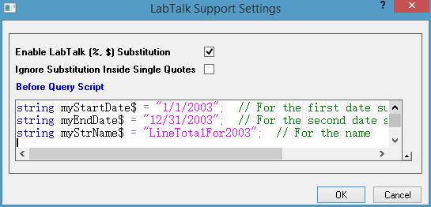
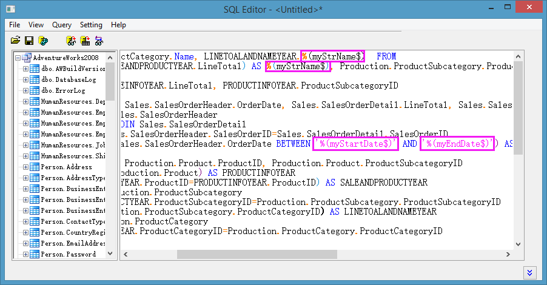
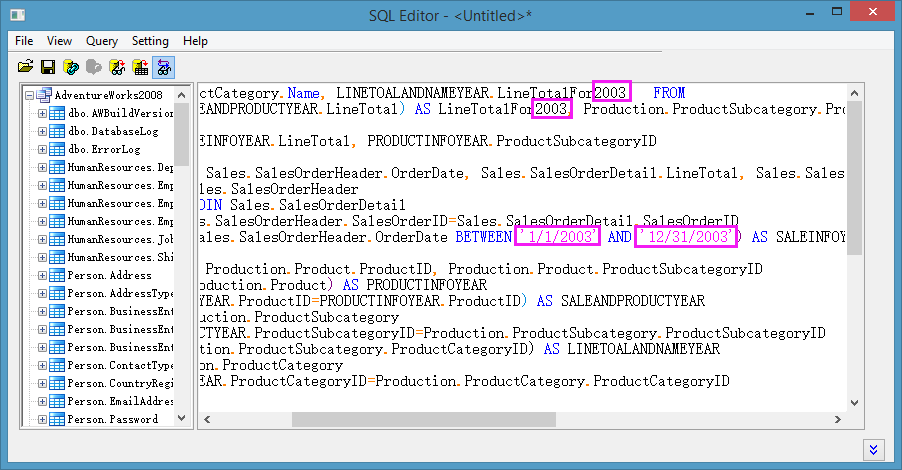
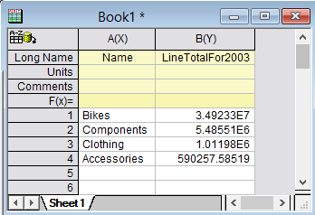
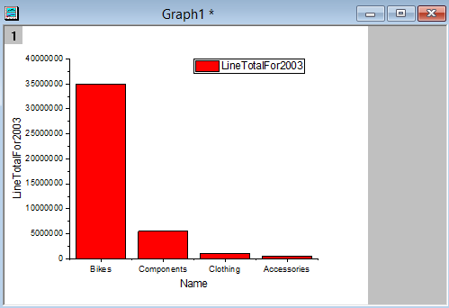
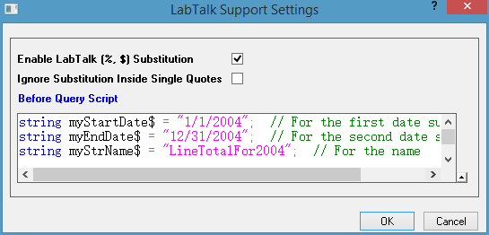
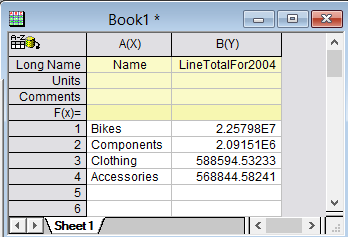
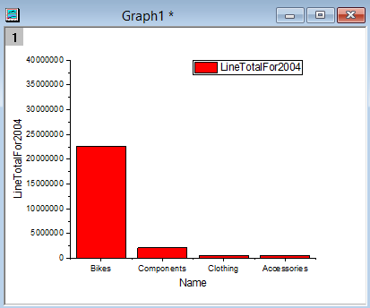
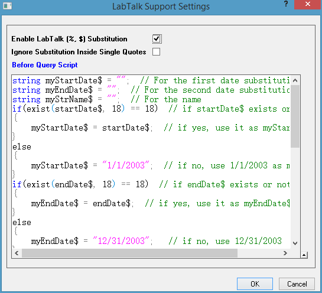

Datenbankimport durch LabTalk-Substitution aktualisieren
Zusammenfassung
Dieses Tutorial zeigt, wie Daten aus einer Datenbank in ein Origin-Arbeitsblatt mit Hilfe des SQL-Editors mit LabTalk-Substitution importiert werden. Danach wird ein Säulendiagramm für die importierten Daten erstellt. Zum Schluss sollen die Arbeitsblattdaten und das Diagramm durch den definierten LabTalk-Variablen aktualisiert werden.
Die SQL-Datenbank, die hier verwendet wird, ist die AdventureWorks-Datenbank. Einzelheiten dazu, wie eine AdventureWorks-Datenbank verbunden wird, finden Sie auf der Webseite von CodePlex.
Origin-Version mind. erforderlich: Origin 8.5.1 SR0
Was Sie lernen werden
Dieses Tutorial zeigt Ihnen, wie Sie:
- Daten mit dem SQL-Editor importieren,
- die LabTalk-Substitution in SQL-Aussagen verwenden,
- ein Säulendiagramm erstellen,
- Datenbankimport durch LabTalk-Substitution aktualisieren.
Schritte
Angenommen, Sie haben bereits einen SQL-Server mit dem Namen AdventureWorks2008 auf einem Server noho eingerichtet.
Daten aus Datenbank importieren und Säulendiagramm erstellen
- Öffnen Sie ein neues Projekt. Öffnen Sie den SQL-Editor, indem Sie auf die Schaltfläche SQL-Editor öffnen auf der Symbolleiste Datenbankzugriff klicken.

- Wählen Sie im Menü Datei: Verbindungszeichenkette bearbeiten und geben Sie die Verbindungszeichenkette unten im Textfeld ein.
Provider=SQLOLEDB.1; Password=labtalk2015; Persist Security Info=TRUE; USER ID=CONNECT; Initial Catalog=AdventureWorks2008; DATA SOURCE=noho
- Klicken Sie auf die Schaltfläche Test, um zu prüfen, ob die Verbindung in Ordnung ist. Wenn er in Ordnung ist, klicken Sie auf die Schaltfläche OK, um die Verbindung zur Datenbank herzustellen.
- Wählen Sie im Menü des SQL-Editors Anfrage: LabTalk..., um den Dialog Einstellungen der Unterstützung von LabTalk zu öffnen. Aktivieren Sie in diesem Dialog das Kontrollkästchen Substitution durch LabTalk (%, $) aktivieren und geben Se dann das folgende LabTalk-Skript in dem Textfeld Skript vor Anfrage ein.
string myStartDate$ = "1/1/2003"; // For the first date substitution string myEndDate$ = "12/31/2003"; // For the second date substitution string myStrName$ = "LineTotalFor2003"; // For the name
- 
- Klicken Sie auf OK, um zum SQL-Editor zurückzukehren. Geben Sie im rechten Textfeld die folgenden SQL-Aussagen ein.
SELECT Production.ProductCategory.Name, LINETOALANDNAMEYEAR.%(myStrName$) FROM (SELECT SUM(SALEANDPRODUCTYEAR.LineTotal) AS%(myStrName$), Production.ProductSubcategory.ProductCategoryID FROM (SELECT SALEINFOYEAR.LineTotal, PRODUCTINFOYEAR.ProductSubcategoryID FROM (SELECT Sales.SalesOrderHeader.OrderDate, Sales.SalesOrderDetail.LineTotal, Sales.SalesOrderDetail.ProductID FROM Sales.SalesOrderHeader INNER JOIN Sales.SalesOrderDetail ON Sales.SalesOrderHeader.SalesOrderID=Sales.SalesOrderDetail.SalesOrderID WHERE Sales.SalesOrderHeader.OrderDate BETWEEN '%(myStartDate$)' AND '%(myEndDate$)') AS SALEINFOYEAR INNER JOIN (SELECT Production.Product.ProductID, Production.Product.ProductSubcategoryID FROM Production.Product) AS PRODUCTINFOYEAR ON SALEINFOYEAR.ProductID=PRODUCTINFOYEAR.ProductID) AS SALEANDPRODUCTYEAR INNER JOIN Production.ProductSubcategory ON SALEANDPRODUCTYEAR.ProductSubcategoryID=Production.ProductSubcategory.ProductSubcategoryID GROUP BY Production.ProductSubcategory.ProductCategoryID) AS LINETOALANDNAMEYEAR INNER JOIN Production.ProductCategory ON LINETOALANDNAMEYEAR.ProductCategoryID=Production.ProductCategory.ProductCategoryID
- 
Wie Sie sehen können, werden in den Aussagen drei LabTalk-Variablen verwendet.
- Klicken Sie einfach auf die letzte Schaltfläche
 auf der Symbolleiste und Sie können die Substitutionen sehen.
auf der Symbolleiste und Sie können die Substitutionen sehen.
- 
- Wählen Sie im Menü Datei: Im aktivem Arbeitsblatt speichern, um diese Einstellungen im Arbeitsblatt zu speichern, und klicken Sie dann auf die Schaltfläche Daten in Arbeitsblatt importieren
 , um die Daten in das Arbeitsblatt zu importieren.
, um die Daten in das Arbeitsblatt zu importieren.
- Schließen Sie den SQL-Editor. Sie können die importierten Daten im Bild unten sehen. Der Langname für Spalte B ist "LineTotalFor2003". Dieser ist in der LabTalk-Variable festgelegt.
- 
- Markieren Sie Spalte B im Arbeitsblatt und wählen Sie dann im Menü Zeichnen: Säulen/Balken/Kreis: Säulendiagramm, um ein Säulendiagramm zu erstellen.
- 
Datenbankimport durch LabTalk-Substitution aktualisieren
Die LabTalk-Variablen myStartDate$, myEndDate$ und myStrName$ werden verwendet, um zu steuern, aus welchem Jahr die Daten stammen, die aus der Datenbank importiert werden. Eine Möglichkeit, Daten aus einem anderen Jahr zu importieren, besteht in der Änderungen dieser Variablenwerte im Dialog Einstellungen der Unterstützung von LabTalk.
- Aktivieren Sie das Arbeitsblatt mit Daten aus der obigen Datenbank. Klicken Sie auf die Schaltfläche SQL-Editor
 . Der SQL-Editor wird wieder geöffnet, dieses Mal mit den gespeicherten Einstellungen.
. Der SQL-Editor wird wieder geöffnet, dieses Mal mit den gespeicherten Einstellungen.
- Wählen Sie im Menü Anfrage: LabTalk... im SQL-Editor, um den Dialog Einstellungen der Unterstützung von LabTalk zu öffnen. Ändern Sie die Werte dieser drei Variablen: myStartDate$, myEndDate$ und myStrName$.
string myStartDate$ = "1/1/2004"; // For the first date substitution string myEndDate$ = "12/31/2004"; // For the second date substitution string myStrName$ = "LineTotalFor2004"; // For the name
- 
- Klicken Sie auf OK, um zum SQL-Editor zurückzukehren. Klicken Sie auf die Schaltfläche Anfrageeinstellungen speichern und klicken Sie dann auf die Schaltfläche Daten in Arbeitsblatt importieren . Schließen Sie den SQL-Editor.
- Sie können jetzt sehen, dass die Daten im Arbeitsblatt und das Diagramm aktualisiert wurden.
- 
- 
Dazu müssen Sie aber den Dialog des SGL-Editors jedes Mal öffnen, um die Variablenwerte, die sich nicht eignen, zu ändern. Eine bequemere Methode zum Modifizieren der Einstellungen der LabTalk-Unterstützung ist die Verwendung von globalen Variablen. Sie können dann die globalen Variablen außerhalb des SQL-Editors modifizieren und neu importieren.
- Aktivieren Sie erneut das Arbeitsblatt und klicken Sie auf , um den SQL-Editor zu öffnen.
- Wählen Sie im Menü Anfrage: LabTalk... und ändern Sie die Einstellungen der LabTalk-Unterstützung folgendermaßen.
string myStartDate$ = ""; // For the first date substitution string myEndDate$ = ""; // For the second date substitution string myStrName$ = ""; // For the name if(exist(startDate$, 18) == 18) // if startDate$ exists or not { myStartDate$ = startDate$; // if yes, use it as myStartDate$ } else { myStartDate$ = "1/1/2003"; // if no, use 1/1/2003 as myStartDate$ } if(exist(endDate$, 18) == 18) // if endDate$ exists or not { myEndDate$ = endDate$; // if yes, use it as myEndDate$ } else { myEndDate$ = "12/31/2003"; // if no, use 12/31/2003 } if(exist(strName$, 18) == 18) // if strName$ exists { myStrName$ = strName$; // if yes, use it as strName$ } else { myStrName$ = "LineTotalFor2003"; // if not, useLineTotalFor2003 as strName$ }
- 
- Klicken Sie auf die Schaltfläche Anfrageeinstellungen speichern im SQL-Editor und schließen Sie den Dialog.
- Wählen Sie im Menü Fenster: Skriptfenster, um das Skriptfenster zu öffnen.
- Führen Sie das folgende Skript aus, indem Sie es in das Skriptfenster einfügen, es markieren und dann auf die ENTER-Taste drücken.
string startDate$ = "1/1/2003"; //define startDate$ string varaible string endDate$ = "12/31/2004"; //define endDate$ string variable string strName$ = "LineTotalFor2003and2004"; //define strName string variable dbimport; //import data from database
- Die Daten im Arbeitsblatt und Diagramm werden aktualisiert.
Hinweis:
- Hier werden drei "globale" LabTalk-Variablen definiert. "Global" bedeutet hier, dass die LabTalk-Variablen vom SQL-Editor "gesehen" und für Substitutionen verwendet werden können.
- Der letzte LabTalk-Befehl dbimport ist der gleiche, der auch beim Klicken auf die Schaltfläche Daten importieren auf der Symbolleiste Datenbankzugriff ausgeführt wird.